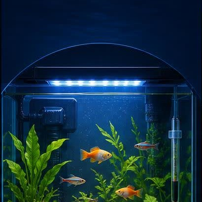
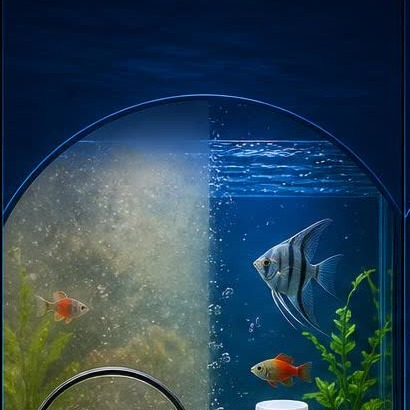
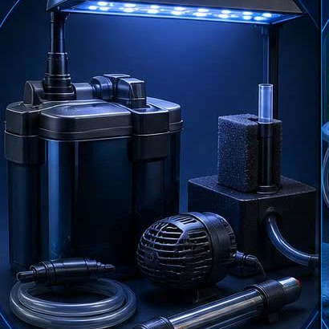
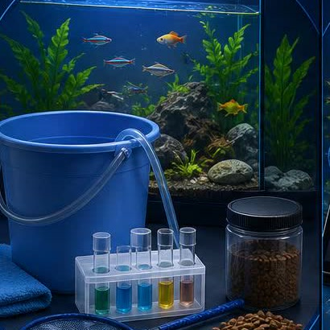
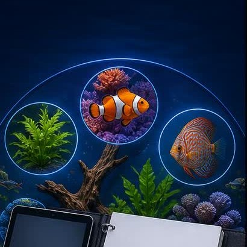
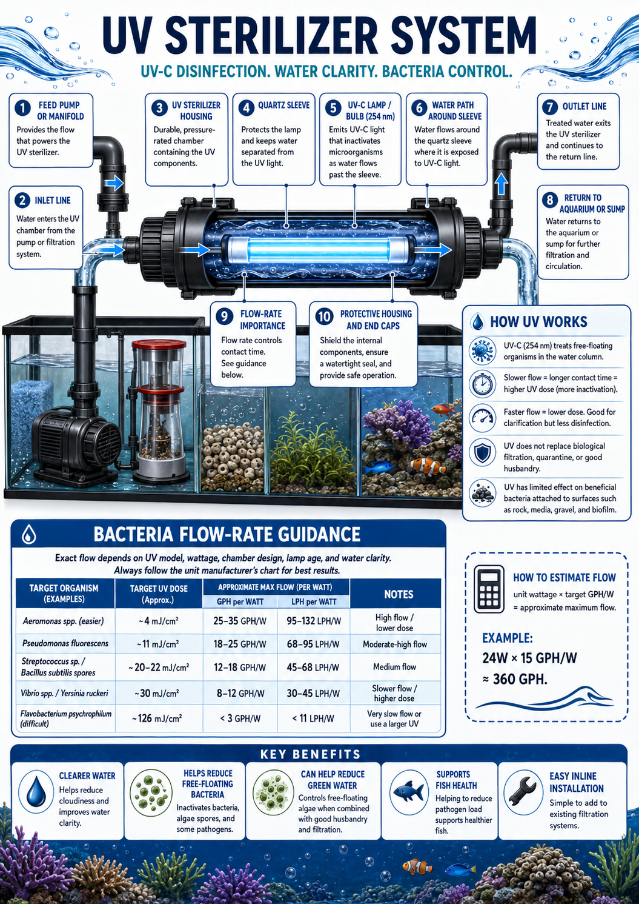
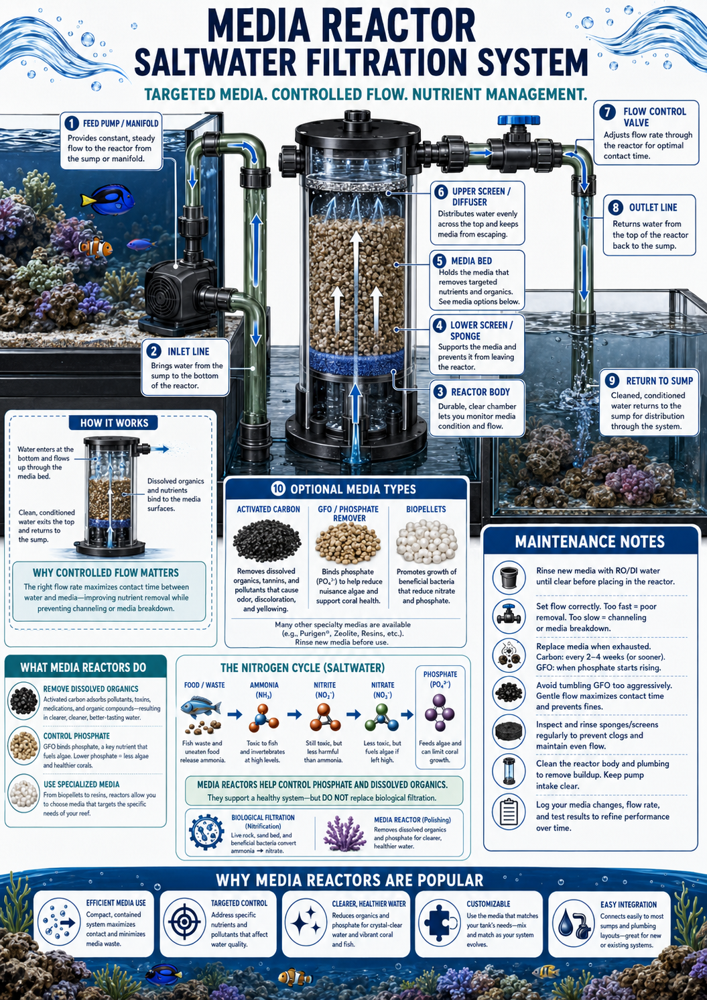
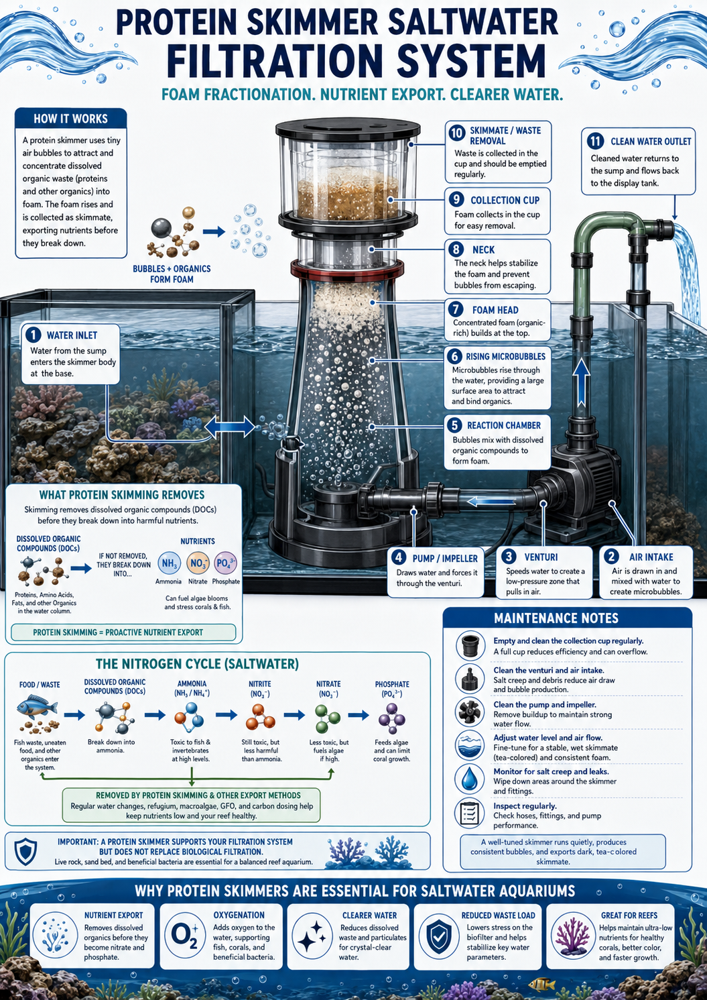

New setupStart a Tank
Step-by-step guidance for setting up a healthy, thriving aquarium.
Start here The Hidden ReefAquariums · Fish · Coral · Ponds
The Hidden ReefAquariums · Fish · Coral · Ponds
Practical care guides for choosing equipment, understanding water quality, and troubleshooting the problems you actually run into at home.

New setupStep-by-step guidance for setting up a healthy, thriving aquarium.
Start here
DiagnosisFind solutions to common issues and get your tank back on track.
Get help
Gear helpCompare filters, pumps, heaters, lighting, and more to find what's right.
Explore gear
Routine careWeekly routines, water changes, feeding, testing, and quarantine basics.
Learn more
LibraryBrowse every guide and resource in one complete library.
Browse allExpand a category to see what's inside.
Diagnosis-style guides for the most common aquarium problems.
Separate new-tank bacterial bloom, overfeeding, dirty substrate, filter problems, and green-water algae.
Open guideCheck light duration, nutrients, phosphate, maintenance habits, plant competition, and cleanup crew fit.
Open guideSpot symptoms like white dots, flashing, clamped fins, rapid breathing, fin damage, and appetite loss.
Open guideTest immediately, protect livestock, reduce feeding, check filtration, and avoid replacing all media at once.
Open guidePrioritize oxygen, temperature, ammonia, nitrite, flow, surface agitation, and recent chemical additions.
Open guideReview salinity, alkalinity, nitrate, phosphate, lighting changes, flow, pests, and recent dips or moves.
Open guideChoose the guide you need, then open the full page or supporting section.
The full beginner setup guide: first shopping trip, equipment, water prep, cycling, and first livestock.
Open guideStart with the core saltwater plan: prepared water or RO/DI, salinity tools, flow, rock, sand, and testing.
Open guideA simple weekly rhythm for testing, water changes, glass cleaning, filter checks, and catching problems early.
Open guideOne consolidated filtration area for freshwater, planted displays, saltwater, reef systems, UV, reactors, skimmers, and sumps.
Most aquarium equipment can work in more than one kind of tank. The better question is what you want the setup to feel like day to day: quiet, easy to service, expandable, compact, reef-ready, budget-conscious, or built around a specific animal.
HOB filters, sponge filters, canisters, and sumps all solve filtration differently. The right choice often depends on how you like to clean.
Fry, shrimp, goldfish, coral, pond fish, and planted tanks can push the same equipment choice in different directions.
A compact setup may be perfect today. A larger reef, high-bioload tank, or automated system may benefit from space for future gear.
Tank size, livestock, photos, goals, and current test results let staff compare good options instead of forcing a generic answer.
Click a filtration system to open its diagram, use case, and maintenance notes.
Best for compact tanks where the filter sits inside the aquarium and keeps equipment out of sight behind plants or hardscape.
 Click to enlarge
Click to enlarge
Best for compact tanks where the filter sits inside the aquarium and keeps equipment out of sight behind plants or hardscape.
Best for low-flow tanks, fry, shrimp, quarantine systems, and simple biological filtration powered by an air pump.
 Click to enlarge
Click to enlarge
Best for low-flow tanks, fry, shrimp, quarantine systems, and simple biological filtration powered by an air pump.
Best when you want to understand an external canister system: intake, media layers, return flow, and routine maintenance.
 Click to enlarge
Click to enlarge
Best when you want to understand an external canister system: intake, media layers, return flow, and routine maintenance.
Best for small to medium freshwater tanks when you want simple setup, easy access, and visible waterfall return flow.
 Click to enlarge
Click to enlarge
Best for small to medium freshwater tanks when you want simple setup, easy access, and visible waterfall return flow.
Best for larger freshwater planted tanks, high bioload displays, reef tanks, and systems that need room for pumps, media, and hidden equipment.
 Click to enlarge
Click to enlarge
Best for larger freshwater planted tanks, high bioload displays, reef tanks, and systems that need room for pumps, media, and hidden equipment.
Best as a supplemental water-clarity and free-floating organism control tool for freshwater, saltwater, pond, and quarantine systems when matched to the right flow rate.

Click to enlargeBest as a supplemental water-clarity and free-floating organism control tool for freshwater, saltwater, pond, and quarantine systems when matched to the right flow rate.
Click a reef or saltwater system to compare live rock, sumps, reactors, skimmers, and compact all-in-one filtration.
Best for reef aquariums where live rock is both habitat and a biological filter that supports bacteria, microfauna, and long-term stability.
 Click to enlarge
Click to enlarge
Best for reef aquariums where live rock is both habitat and a biological filter that supports bacteria, microfauna, and long-term stability.
Best for reef-ready tanks that need more water volume, cleaner equipment placement, protein skimming, refugium space, and stronger nutrient export.
 Click to enlarge
Click to enlarge
Best for reef-ready tanks that need more water volume, cleaner equipment placement, protein skimming, refugium space, and stronger nutrient export.
The filter body is not fundamentally different from a freshwater HOB. This guide shows how the same style of filter is used on small marine tanks, quarantine systems, nano reefs, hospital tanks, and fish-only saltwater aquariums.
 Click to enlarge
Click to enlarge
The filter body is not fundamentally different from a freshwater HOB. This guide shows how the same style of filter is used on small marine tanks, quarantine systems, nano reefs, hospital tanks, and fish-only saltwater aquariums.
Best for nano and medium reef aquariums where the display and filtration chambers are combined into one compact footprint.
 Click to enlarge
Click to enlarge
Best for nano and medium reef aquariums where the display and filtration chambers are combined into one compact footprint.
Best for reef and saltwater aquariums that need targeted phosphate, dissolved organics, or specialty media control with predictable flow.

Click to enlargeBest for reef and saltwater aquariums that need targeted phosphate, dissolved organics, or specialty media control with predictable flow.
Best for reef tanks and saltwater aquariums where foam fractionation removes dissolved organics before they break down into nutrients.

Click to enlargeBest for reef tanks and saltwater aquariums where foam fractionation removes dissolved organics before they break down into nutrients.
Feeding guides, food types, and how to avoid common mistakes.
Water testing, parameters, algae, parasites, and building a stable tank.
Bring a fresh water sample, tank size, livestock list, recent test results, and clear photos of the tank or affected fish. That gives the store a much better starting point than guessing from one symptom.